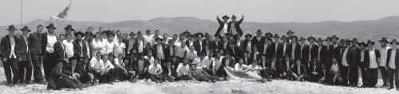

Update from the Shomron
There are hundreds of families living in Yitzhar. It is a comfortable and desirable place to live, to the point that there is a housing shortage…

First I want you to read an email I received.
B”H
Aliza Shalom,
I want to share with you the latest amazing event at Mitzpeh Yitzhar. It is clear that the Rebbe is involved with everything in Mitzpeh Yitzhar, so much so that we can change its name to Mitzpeh Moshiach!
There is so much to say about the amazing families who, by living in Mitzpeh Yitzhar, are fighting to keep alive the flame of the simplest truth: Eretz Yisroel is Eretz HaKodesh.
This last Shabbos, 13 Iyar 5772 Parshas Emor, 130 T’mimim and Mashpiim came to Mitzpeh Yitzahar. Itzik Sandroi’s family opened their caravan-house to all of them!
The goal is to have a Yeshiva with all the facilities that are needed for such an institution in Gashmius and Ruchnius terms, according to the letter we received from the Rebbe. Our first move was a figurative jump into the water; and I can tell you – the sea was split! And it is staying that way!
The momentum began Thursday night, Lail Shishi, when the T’mimim made a Farbrengen in the tent with the Chabad Shliach of Itamar, Rabbi Yechezkel Noema.
Friday, throughout the whole day, more and more T’mimim came along with Mashpiim. When I arrived around 6 pm with my children, Emanuel Menachem and Zahava Chaya, what we saw was Geula Mamash! On the Mitzpeh Yitzhar hilltop in the Shomron, T’mimim were everywhere; tents were up, flags waved, and the boys were learning, resting, running. It was just like 770 on Shmini Atzeres, 30 minutes before candle lighting.
After Kabbalas Shabbos and a dance all over the Giva, the T’mimim set up a meal fit for royalty, Jewish royalty. Then there was a farbrengen with the Mashpiim until 3 am. The main Nekuda of the discussion was: How do we make the Rebbe smile?
In the morning after Seder Limud we went to the Yishuv, a 25 minute walk with the most breathtaking view of the Shomron. After Davening at the Beit Knesset in Yitzhar we went back to the Giva for Kiddush and a Farbrengen with the Mashpia Ofer Maiduvnik. Around 6 pm we went back to the Yishuv for Seder Niggunim and a Maamer. On Motzaei Shabbat all the T’mimim farbrenged with Itzik till 6:30 a.m.
The atmosphere was charged with the feeling that the time has come to really move ahead with establishing the Mitzpeh Yitzhar Yeshiva according to the letters from the Rebbe. We are running on the last drop of fuel, but we have amazing Ko’ach to move forward.
There is so much more to write, but really it is time for action! The next step is to gather the right Bachurim and Mashpiim.
My company already made a down payment for a Yurt to serve as a house for the T’mimim.
Still, there is a lot more to do and build.
IY”H I will be in touch,
Efy
The email above is from ‘Efy’ Efraim Biran. I first met Efy in the final days of the Gush Katif tragedy, when he came to NY to raise awareness about what was about to happen in the Shomron. He has been a constant supporter of those keeping the Shomron strong from a Shleimus HaAretz point of view. And he gives the credit to his wife Emuna, about whom he says that she does not believe in giving up. Recently his activities have been centered on giving support to Mitzpeh Yitzhar.
I first visited the site of Mitzpeh Yitzhar in the spring of 2003 when it was a single tent and small bunk house with a half dozen Bachurim living there. It might sound underdeveloped, but even then, it had a certain irresistible attraction. The view from Mitzpeh Yitzhar is of seemingly never-ending hills, under a canopy of softly churning white and grey clouds, intermittently suspended below a sapphire sky. My guide that day was Itzik Sandroi, the Bachur whose vision it was to establish Mitzpeh Yitzhar and whose hands were the ones to build it.
Mitzpeh Yitzhar is a hilltop community located a mile and a half from the town of Yitzhar, which is in close proximity to Sh’chem. It’s a very holy place, the site where Yaakov Avinu lived and where Yosef HaTzaddik is buried. Itzik grew up in Yitzhar. Originally his family lived further south in Kiryat Malachi, but the Rebbe sent them a fax requesting them to move to Yitzhar.
The request was very unusual. The Sandroi family thought the Rebbe’s office had made a mistake. But within minutes Rabbi Groner – in anticipation of the expected reaction – called the Sandrois by phone to confirm that the Rebbe had sent the message to them.
I wish I could say that the Sandrois made the move and lived happily ever after. But it was not quite like that. They made the move, but it was very tough. At the time there were barely twenty families in Yitzhar, the nearest grocery store was miles away and there was no bus service. But throughout the years, the Rebbe gave the Sandrois encouragement. Now there are hundreds of families living in Yitzhar. It is a comfortable and desirable place to live, to the point that there is a housing shortage.
Mitzpeh Yitzhar is not the only outpost that surrounds Yitzhar. These outposts serve as a first line of defense in two ways. Firstly, there are in a strategic position to intercept terrorist attacks, and secondly they prevent land grabbing by the Arabs. Jewish towns that have fences run the risk of Arabs building right up to the fence and thereby preventing expansion. Yitzhar does not have a fence. Instead it has outposts. Often they are referred to as illegal outposts. In the case of Mitzpeh Yitzhar, I know that Itzik made the effort to accumulate all the information he needed to receive a permit for his outpost, but the office in charge would not issue a permit. It can be compared to the DMV refusing to give someone a driver’s license after they pass all the requirements. The true illegality is the office that illegitimately refuses to give the permit.
Since the days of a single tent, Itzik is married and raising a growing family Bli Ayin HaRa. Mitzpeh Yitzhar has grown, doubling, tripling and quadrupling the number of families. The families live in caravans or converted freight containers. The men folk manage to make their simple homes into Jewish palaces. The tent that Efy writes about in the email was put up especially for the weekend to house the 130 guests.
Mitzpeh Yitzhar has a short but interesting history. The army has come a few times to destroy it. With each destruction and re-building, Mitzpeh Yitzhar improves and expands. Often Itzik turns to the Rebbe for guidance and inspiration. The Rebbe has repeatedly written about establishing a Yeshiva. I think Efy’s analogy of jumping in the water is appropriate for the Shabbos with the 130 guests. It broke the spiritual ground, so to speak, for the establishment of the Yeshiva. Efy’s own business has made a down payment on a Yurt (a simple dwelling that is usually conical in shape). They are also going to need tables and chairs, books to study from, and food to eat. With the Rebbe’s Bracha all will be taken care of, and those who help to support this project will undoubtedly also have the Rebbe’s Bracha. And the Yeshiva at Mitzpeh Yitzhar/Mitzpeh Moshiach will lead the way to making the Rebbe smile. MOSHIACH NOW!
•
FURTHER UPDATE: Since I wrote this article, Mashpiim, Bachurim and administration staff have been signed on for the Mitzpeh Yitzhar Yeshiva. They have worked on their budget and have arranged to accept checks made out to Ezrat Israel and mailed to Bais Menachem, 120 West Ramapo Road, Suite 6 – 347, Garnerville, NY 10923
Aliza Karp. "Update from the Shomron." Beis Moshiach, no. 837 (June 12, 2012).